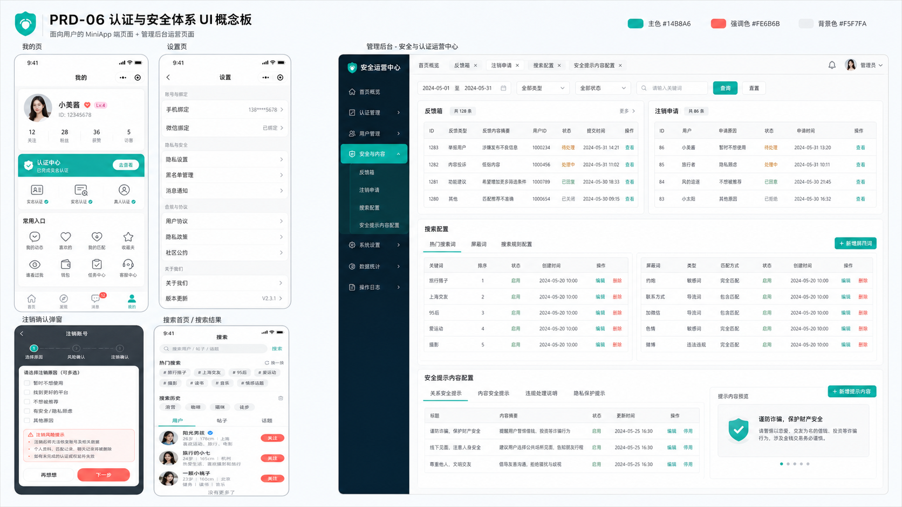

PRD-06 静态 Demo
覆盖移动端我的页、认证中心、帮助客服、反馈箱、设置、隐私设置、注销、合规清单、关于我们、公告、搜索首页与搜索结果，以及后台反馈箱、注销申请、搜索热词、屏蔽词、入口配置、搜索配置、公告协议和安全提示内容配置。
14移动端页面
10后台页面
通过两轮核查
0未闭环阻塞

需求来源
基于正式版 PRD、找茬清单、一期上线目标与两轮 Claude 核查结果实现。
范围收敛
不做安全中心独立页、通知设置、黑名单、不看 TA、关键词自助管理和熟人屏蔽。
后台承接
反馈箱、注销申请、搜索热词/屏蔽词、入口配置、搜索配置、公告协议、安全提示内容配置均可演示。
核查门禁
第 2 轮最终通过，未闭环 P0/P1/P2 均为无，无需用户拍板。
关键闭环
Demo 优先串联用户可感知的链路，而不是散装页面。
注销校验
硬阻断不创建申请；风险项可确认后进入后悔期；阻断解除后必须重新校验。
搜索范围
按 sourceScene 限定用户、动态、话题结果，不搜索学校、职业、测评报告和身高筛选。
合规内容
协议、隐私政策、第三方清单、个人信息收集清单和公告均由后台配置承接。
边界说明
本 Demo 使用本地 mock 数据，不接真实接口、不写数据库，不代表最终蓝湖设计稿。
合规文档、客服链接、首批热词/屏蔽词、安全提示和入口图标仍为上线前准备项，已在 PRD 前置准备清单标记为上线门禁。